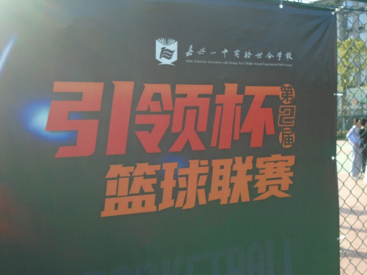
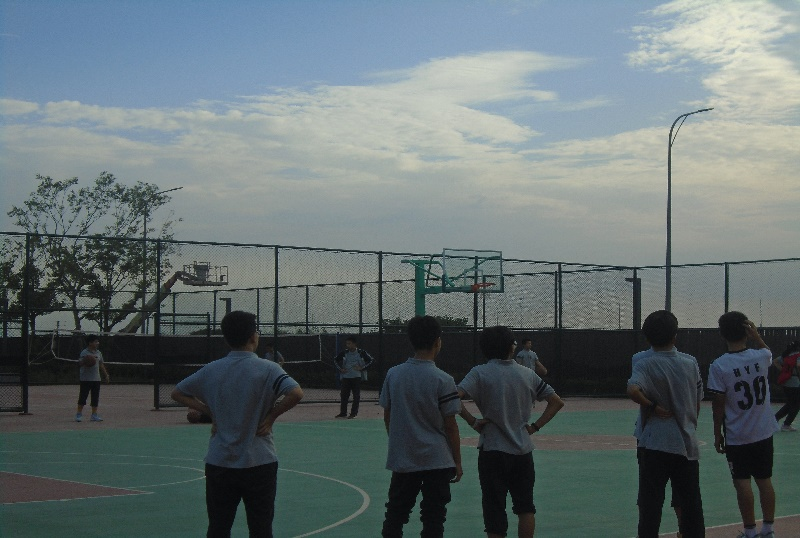
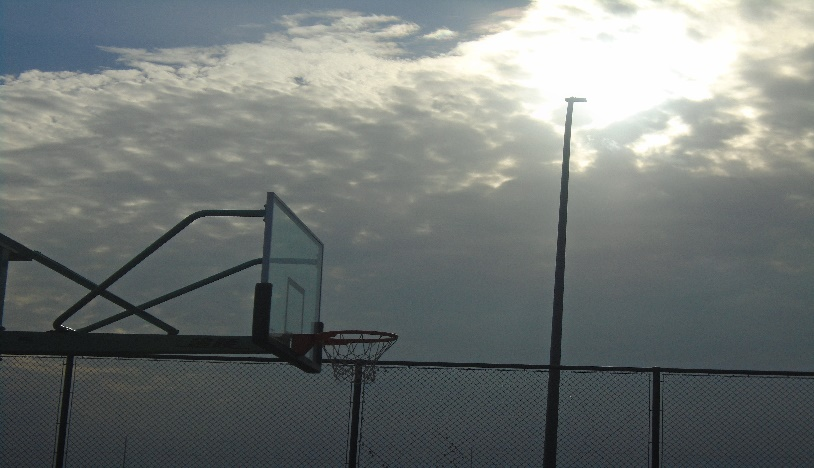
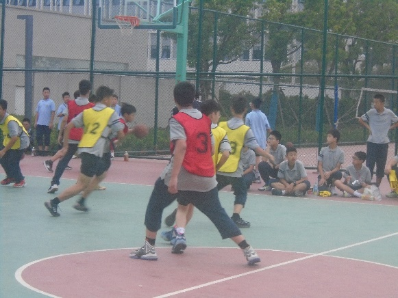
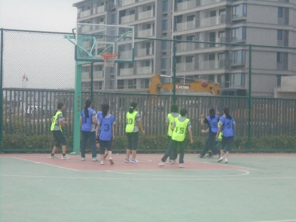
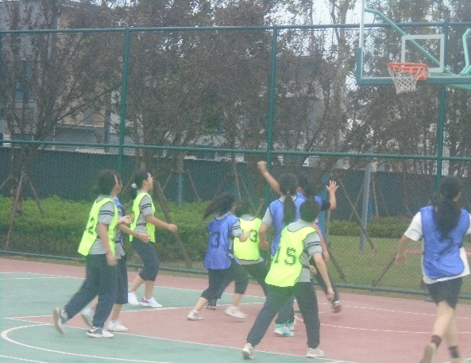
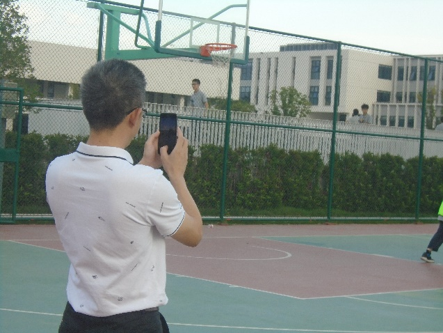
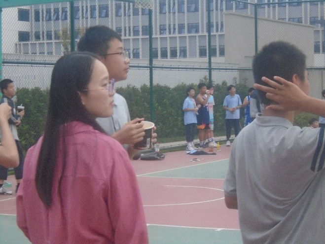
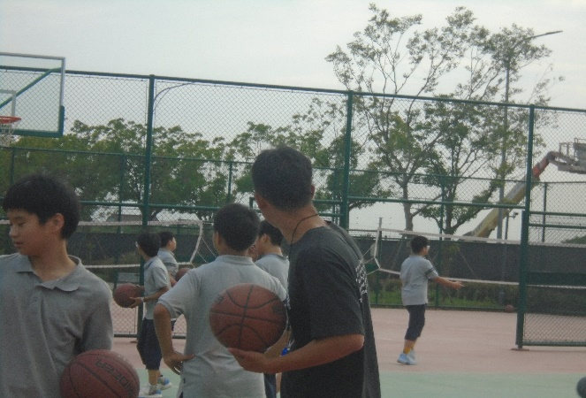

迎“篮”而上 不负青春
——记嘉兴一中实验世合学校第二届引领杯篮球联赛

“篮”不住的热爱 “篮”不住的精彩
每当黄昏阳光都把所有渲染。 粉红色的云朵镶嵌入绯红的晚霞中，屋檐间所映的暮光是太阳含蓄的爱。少年们的身姿随光影流动，似幻似梦。球衣勾勒出少年的挺拔。
  落幕与晚风相伴，篮球与少年相随，风止球起，不负热爱。 比赛开始，斗志昂扬的运动员们准备就绪，哨声一响，裁判员把球高高的抛起，双方队员同时一跃而上，激烈的争夺开始了。只见球在他们的双腿之间来回穿梭，像闪电一样绕过一名名防守员，伴随着他一路向对方球门跑去，双手把球高高举起，奋力一跃，身体侧倾，把球准确无误的投进了篮筐，观众们欢声雀跃。
   
橘光打向操场，比赛到了下半场，观众们依旧座无虚席，运动员们使出了全身解数。 暖阳之下，观众们呐喊、欢呼着为自己喜欢的球队加油打气。
 
在这个碧波荡漾的黄昏，惊鸿一瞥,霎然，吹彼心中飞波澜。少年们肆意挥洒着青春的汗水，他们开在人海里，似乎在这偌大的天地之间，化成的第三种绝色。
挥洒汗水，快乐在运动中流淌；迸发激情，青春在跳跃中飞扬；活力无限，幸福在手掌中传递；团结一致，信心在赛场上绽放。青春没有失败，让赛场充满激情，人生更加精彩！